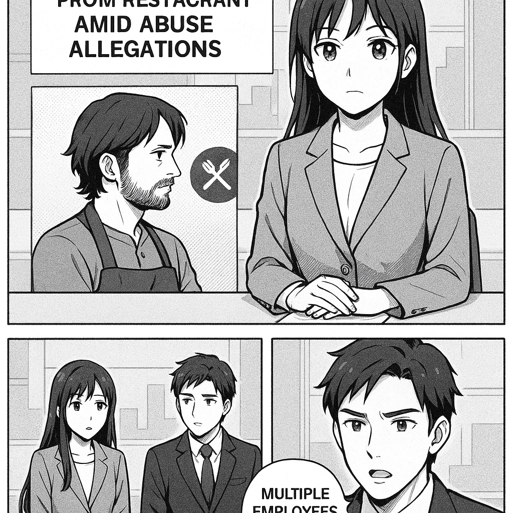

こんにちは、ミライです！今日は、レストラン「ノーマ」のシェフに関するニュースをわかりやすくお伝えします。 デンマークの有名なレストラン「ノーマ」のリーダー、レネ・レゼピさんが、従業員からの「職場の環境がとても悪い」という告発を受けていました。これを受けて、レネさんはまず「ごめんなさい」と謝っています。 その後ですが、レネさんはノーマのシェフの仕事を辞めることにしました。つまり、責任を取って辞任する形です。 レストランの中が厳しい環境だったことについては大きな問題になっていて、今後はより良い職場づくりが求められています。 このニュースは、働く場所の環境がとても大事だということを改めて考えさせてくれますね。 以上、ミライでした！

国際情勢アナリストのソウマです。 世界的に有名な日本料理店「Noma」のヘッドシェフが、職場での虐待疑惑を受けて辞任しました。この件は、高級レストラン業界における労働環境の問題を改めて浮き彫りにしており、業界全体での労働環境改善や透明性向上の必要性が一層求められるでしょう。特に国際的な注目を浴びる店舗での不祥事は、ブランド価値や観光にも影響を与えるため、経営陣の適切な対応が問われます。
トップへ戻る